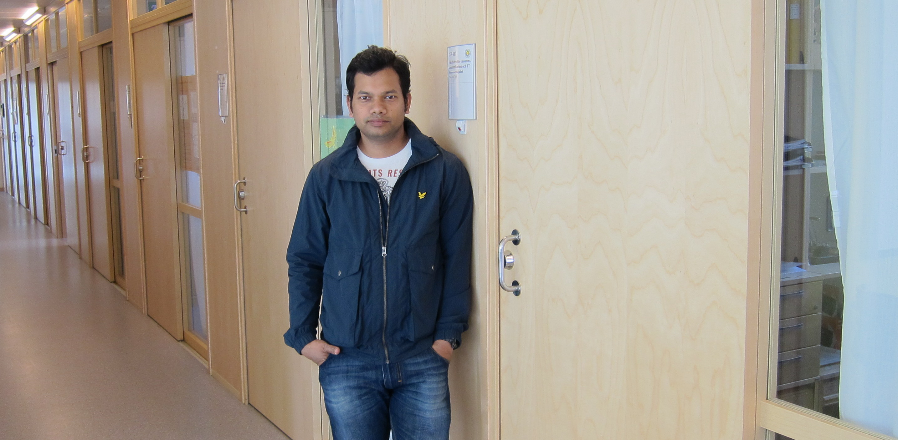

I am a PhD student at the Computer Science Department of Karlstad University, Sweden since October 2009. I became licentiate in Computer Science in 2012. Currently I am working on a EU FP7 project called RITE, here I am investigating transport level solutions for time dependent applications such as real time communication, online gaming, stock trading. I received M.Sc. degree in Global Information and Telecommunication Studies from Waseda University, Japan.
Contact
FAX +46 54 700 1828
Mohammad.rajiullah@kau(dot)se
✉ Computer Science Department, 651 88, Karlstad, Sweden
Office 21F 417
skype Mohammad.rajiullah